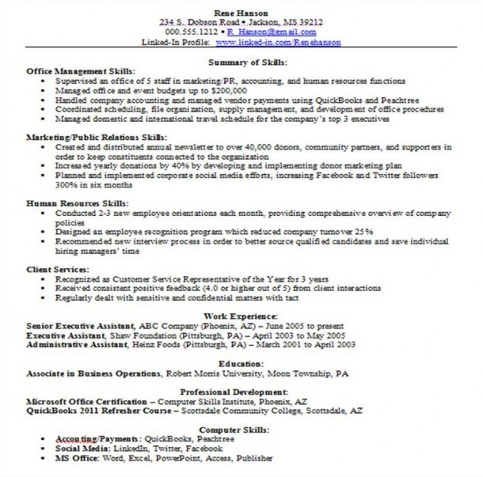

SKILLS-BASED CV
A skills-based resume starts by listing the skills you have gained and your professional qualifications. The structure of a skills-based CV is the following :
Name in large letters / Contact details / Personal statement / Education-Academic qualifications / Work Experience / Activities and Interests / Additionnal skills /
References
